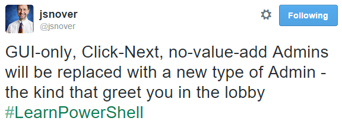
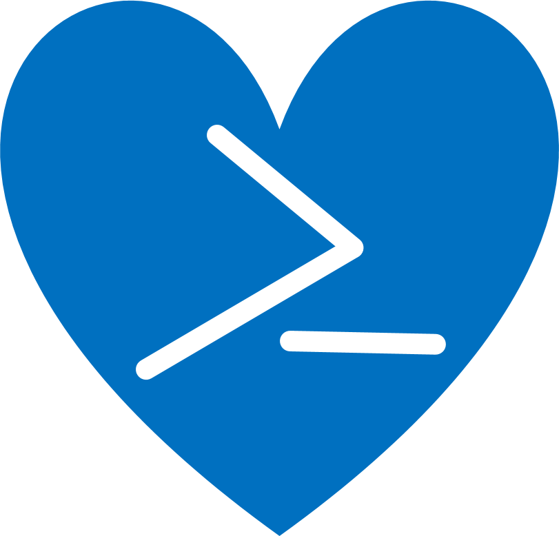

Nekad se neko usudi da uradi silent install naporno, 20+ formata
Da li random osoba ume (sitni detalji)
Da li smo svesni tekućeg stanja sistema
Dinamika tima kod višegodišnjih projekata
Group policy - previše generalizovan

Produkcija
Manuelna okruženja.
Reimplementacija na build serveru.
Imutabilna infrastruktura
Kako da nam bude lepo
- jedan interfejs
- *mnogo* pakovanja i **up to date**
- stabilnost i reproduktivnost
- da bude sigurno
- i decentralizovano
- lako za korišćenje (KISS) i ekstenzibilno
- maintainers: 1100
- install svake sekunde
- [community repo](https://chocolatey.org/packages)
- moderacija
- trusted people/pkgs
- virus total (50+ AV)
- XP .. Windows 10
FOS NuGet kao format pakovanja
decentralizovan
specifikacija dependency-ja
nema security
Fensi zip fajlovi koji imaju pristup PowerShell-u.
Dodatna logika koja fali u instalerima.
CLI i GUI tool , ali ipak CLI, stvarno 
ALI NE CMD.EXE
choco -h
* search - searches remote or local packages (alias for list)
* info - retrieves package information.
* install - installs packages from various sources
* pin - suppress upgrades for a package
* outdated - retrieves packages that are outdated.
* upgrade - upgrades packages from various sources
* uninstall - uninstalls a package
* pack - packages up a nuspec to a compiled nupkg
* push - pushes a compiled nupkg
* new - generates files necessary for a chocolatey package from a template
* source - view and configure default sources
* feature - view and configure choco features
choco install -h
choco info visualstudiocode
Title: Visual Studio Code | Published: 15.10.2016.
Package approved as a trusted package on okt 16 2016 01.05.23.
Package testing status: Passing on okt 16 2016 01.00.03.
Number of Downloads: 29152 | Downloads for this version: 3
Package url
Chocolatey Package Source: https://github.com/jivkok/Chocolatey-AutomaticPackages/tree/master/VisualStudioCode
Package Checksum: '+3oxLx45S5UHYp1+vbTLySqqQwtF8ONsIpXNPu+dhuHVwMaN6Hm5oC9+Wmwswuw2eQbWIpOpLk9XJkIJ6+x0Rw==' (SHA512)
Tags: Microsoft VisualStudioCode vscode editor ide javascript typescript admin
Software Site: https://code.visualstudio.com/
Software License: https://code.visualstudio.com/License
Software Source: https://github.com/Microsoft/vscode
Documentation: https://code.visualstudio.com/docs
Issues: https://github.com/Microsoft/vscode/issues
Description: Build and debug modern web and cloud applications. Code is free and available on your favorite platform - Linux, Mac OSX, and Windows.
### Package Specifics
The package uses default install options except that it adds context menu entries and Visual Studio Code isn't started after installation.
#### Package Parameters
The following package parameters can be set:
* `/NoDesktopIcon` - Don't add a desktop icon for Visual Studio Code.
* `/NoQuicklaunchIcon` - Don't add an icon for Visual Studio Code to the QuickLaunch area.
* `/NoContextMenuFiles` - Don't add an `Open with Code` entry to the context menu for files.
* `/NoContextMenuFolders` - Dont't add an `Open with Code` entry to the context menu for folders.
* `/DontAddToPath` - Don't add Visual Studio Code to the path.
- `cinst boxstarter`
- reboot resilient
- instalira sve update-ove i helperi za konfiguraciju Windowsa
- [gist](https://gist.github.com/olohmann/b8dee52278296db65937)
Šta je pakovanje
- Metapodaci + PowerShell installer
... koji uglavnom download-uje sa interneta
... sa HTTPS auto switch-em
- Tipovi pakovanja
install, portable (binary), virtual, meta (1 od)
- `Packages.config`, `$Env:ChocolateyInstall\bin`
- ne postoji source repo (deb-src)
- checksum je od nedavno obavezan
... osim sa `--XXXchecksum`
Novo pakovanje
- `choco new `
- `chocolateyInstall.ps1`
- auto uninstall ili `chocolateyUninstall.ps1`
- Parametri, custom logika
- Primeri: [dbeaver](https://github.com/majkinetor/au-packages/blob/master/dbeaver/tools/chocolateyInstall.ps1), [less](https://github.com/majkinetor/au-packages/tree/master/less/tools), [nexus-oss](https://github.com/majkinetor/au-packages/blob/master/nexus-oss/tools/chocolateyInstall.ps1)
- Alati: `cinst ussf insted`
- Problemi: `msiinv`
- [chocolatey-test-environment](https://github.com/chocolatey/chocolatey-test-environment)
- Koristi samo PowerShell da napravi updater
- Automatski downloaduje sve URLove i računa checksume
- Može da updatuje odjenom bilo koji subset package-ja
- Plugin sistem: notifikacije, reporting, persistance ...
- Dolazi uz spreman AppVeyor build
- Custom installeri koji nemaju silent opcije
- Autohotkey
- Registry problemi
- Nekad je teško napraviti downloader
- Mrežni problemi
- Ogromni installer-i
- Rejected
- Nano image je nekoliko stotina MB
- Nano zahteva PowerShell: `NanoServerImageGenerator.psd1`
- Nano ne koristi MSI subsistem već WSA
- Chocolatey će podržati WSA i MSI na nano serveru
- ETA: 6 meseci
Skoro da ne postoji nijedan kontejner koji ne koristi `apt-get` ili drugi menadžer
[Rails docker image](https://hub.docker.com/explore/)
```
FROM ruby:2.3
RUN apt-get update
RUN apt-get install -y nodejs
RUN apt-get install -y mysql-client postgresql-client sqlite3
ENV RAILS_VERSION 5.0.0.1
RUN gem install rails --version "$RAILS_VERSION"
```
## Biznis
- Package internalizer
- `choco outdated | internalize`
- Automatic package builder
- Per version CDN od Jan. 2016
- Sinhronizacija sa _Programs & Features_
- `choco new --from-installed-msis`
- `cuninst name* --from-programs-andfeatures`
- Support i prioritet za nove funkcionalnosti
# Komuna
- Gitter (više kanala)
- Google group
- Site
- https://github.com/orgs/chocolatey/people
# Korisnici
- [Wallmart](https://puppet.com/blog/extending-chocolatey-packaging-walmart), [Facebook](https://chocolatey.org/packages/osquery), Nordstrom, D2-SI
- Puppet, Chef
- Trezor
## Kako da doprinesete
- Budite pre svega korisnici (uz feedback)
iskoristite najbolje vreme koje vam je dato
- Ne morate da bude maintaineri
- Tražite od vendora choco package
- Kada pomislite da automatizujete install
... nemojte !
- Tražite od kompanije choco biznis plan
500Eur/35m/yr
- Tražite od Microsofta da podrži

 vreme
→ inovacija
vreme
→ inovacija